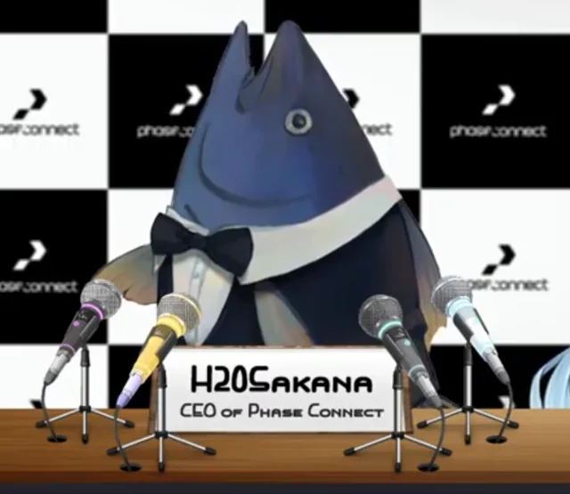

About MeHi there! I'm Jared, and welcome to my little corner of the internet.
This website is a space for me to share my website development skills for my Internet Services class.
|
 | |||
My ExperiencesAlright, alright, settle down folks! Gather 'round and listen up, 'cause this ol' dog has got some tricks up its sleeve. Years of tireless work, of busting my hump and giving 110%, have honed me into a right sharp tool.
I can tackle any job that comes my way, solve puzzles faster than a jackrabbit on a sugar rush, and come up with solutions that'll make your head spin. Let me tell you, there ain't a problem I can't fix, a challenge I can't conquer.
|
||||